<!DOCTYPE html><html><head><meta name="generator" content="Hexo 3.8.0"><meta charset="utf-8"><title>GCP (Google Cloud Platform) 入門 | Titangene Blog</title><meta name="description" content="利用 blog 紀錄學習歷程"><meta http-equiv="X-UA-Compatible" content="IE=edge"><meta name="viewport" content="width=device-width,initial-scale=1,maximum-scale=1"><meta name="HandheldFriendly" content="True"><meta name="apple-mobile-web-app-capable" content="yes"><meta name="author" content="Titangene"><link rel="shortcut icon" href="/favicon.ico"><link rel="alternate" href="/atom.xml" title="Titangene Blog"><meta name="description" content="本篇是紀錄在 Google 的 Qwiklab 平台內，完成「A Tour of Qwiklabs and the Google Cloud Platform」這個 quest 所學到的內容，包括如何使用以及認識 Qwiklab 和 GCP。"><meta name="keywords" content="GCP"><meta property="og:type" content="article"><meta property="og:title" content="GCP (Google Cloud Platform) 入門"><meta property="og:url" content="https://titangene.github.io/article/getting-started-with-gcp.html"><meta property="og:site_name" content="Titangene Blog"><meta property="og:description" content="本篇是紀錄在 Google 的 Qwiklab 平台內，完成「A Tour of Qwiklabs and the Google Cloud Platform」這個 quest 所學到的內容，包括如何使用以及認識 Qwiklab 和 GCP。"><meta property="og:locale" content="zh-tw"><meta property="og:image" content="https://titangene.github.io/images/cover/gcp.jpg"><meta property="og:updated_time" content="2019-04-16T12:05:50.221Z"><meta name="twitter:card" content="summary_large_image"><meta name="twitter:title" content="GCP (Google Cloud Platform) 入門"><meta name="twitter:description" content="本篇是紀錄在 Google 的 Qwiklab 平台內，完成「A Tour of Qwiklabs and the Google Cloud Platform」這個 quest 所學到的內容，包括如何使用以及認識 Qwiklab 和 GCP。"><meta name="twitter:image" content="https://titangene.github.io/images/cover/gcp.jpg"><meta name="twitter:creator" content="@titangeneTW"><meta name="twitter:site" content="@titangene_blog"><meta property="fb:admins" content="100001106016019"><meta property="fb:app_id" content="2470546159839111"><meta property="og:image:width" content="1200"><meta property="og:image:height" content="630"><meta name="google-site-verification" content="AaJ39L7h-nWwJjXJMhAMtXSF6H6BUgGWXC80kYvLic8"><link rel="stylesheet" href="//fonts.googleapis.com/css?family=Inconsolata|Titillium+Web"><link rel="stylesheet" href="//use.fontawesome.com/releases/v5.7.0/css/all.css" integrity="sha384-lZN37f5QGtY3VHgisS14W3ExzMWZxybE1SJSEsQp9S+oqd12jhcu+A56Ebc1zFSJ" crossorigin="anonymous"><link rel="stylesheet" href="/style.css"><script async src="https://www.googletagmanager.com/gtag/js?id=UA-129758206-1"></script><script>!function(a){function n(){dataLayer.push(arguments)}a.dataLayer=a.dataLayer||[],n("js",new Date),n("config","UA-129758206-1")}(window)</script><script>function setLoadingBarProgress(e){document.getElementById("loading-bar").style.width=e+"%"}</script></head></html><body><div id="loading-bar-wrapper"><div id="loading-bar"></div></div><script>setLoadingBarProgress(20)</script><header class="l_header"><div class="wrapper"><div class="nav-main container container--flex"><a class="logo flat-box" href="/">Titangene Blog</a><div class="menu"><ul class="h-list"><li><a class="flat-box nav-home" href="/">Home</a></li><li><a class="flat-box nav-archives" href="/archives">Archives</a></li></ul><div class="underline"></div></div><div class="m_search"><form name="searchform" class="form u-search-form"><input type="text" class="input u-search-input" placeholder="Search"> <i class="fas fa-search"></i></form></div><ul class="switcher h-list"><li class="s-search"><a class="fas fa-search" href="javascript:void(0)"></a></li><li class="s-menu"><a class="fas fa-bars" href="javascript:void(0)"></a></li></ul></div><div class="nav-sub container container--flex"><a class="logo flat-box" href="/">Titangene Blog</a><ul class="switcher h-list"><li class="s-comment"><a class="far fa-comment-alt" href="javascript:void(0)"></a></li><li class="s-top"><a class="fas fa-arrow-up" href="javascript:void(0)"></a></li><li class="s-toc"><a class="fas fa-list-ol" href="javascript:void(0)"></a></li></ul></div></div></header><aside class="menu-phone"><nav><a href="/" class="nav-home nav">Home </a><a href="/archives" class="nav-archives nav">Archives</a></nav></aside><script>setLoadingBarProgress(40)</script><div class="l_body"><div class="container clearfix"><div class="l_main"><article id="post-getting-started-with-gcp" class="post white-box article-type-post" itemscope itemprop="blogPost"><section class="meta"><h2 class="title"><a href="/article/getting-started-with-gcp.html">GCP (Google Cloud Platform) 入門</a></h2><span class="post-time"><span class="post-meta-item-icon"><i class="fa fa-calendar"></i> </span><span class="post-meta-item-text">發表於</span> <time title="建立時間：2019-04-15 22:20:20" itemprop="dateCreated datePublished" datetime="2019-04-15T22:20:20+08:00">2019-04-15 </time><span class="post-meta-divider">|</span> <span class="post-meta-item-icon"><i class="fa fa-calendar-check"></i> </span><span class="post-meta-item-text">更新於</span> <time title="修改時間：2019-04-16 20:05:50" itemprop="dateModified" datetime="2019-04-16T20:05:50+08:00">2019-04-16</time></span> <span class="comments-count"><span class="post-meta-divider">|</span> <span class="post-meta-item-icon"><i class="fas fa-comment"></i> </span><a href="https://titangene.github.io/article/getting-started-with-gcp.html#disqus_thread" class="article-comment-count" data-disqus-identifier="article/getting-started-with-gcp.html" itemprop="discussionUrl"></a></span><div class="post-category"><span class="post-meta-item-icon"><i class="fa fa-folder"></i> </span><span class="post-meta-item-text">分類於</span> <span itemprop="about" itemscope itemtype="http://schema.org/Thing"><a href="/categories/cloud/" itemprop="url" rel="index"><span itemprop="name">Cloud</span></a></span></div></section><section class="toc-wrapper"><ol class="toc"><li class="toc-item toc-level-2"><a class="toc-link" href="#你會學到什麼"><span class="toc-text">你會學到什麼</span></a></li><li class="toc-item toc-level-2"><a class="toc-link" href="#存取-gcp-console"><span class="toc-text">存取 GCP Console</span></a><ol class="toc-child"><li class="toc-item toc-level-3"><a class="toc-link" href="#gcp-專案-id"><span class="toc-text">GCP 專案 ID</span></a></li><li class="toc-item toc-level-3"><a class="toc-link" href="#帳號和密碼"><span class="toc-text">帳號和密碼</span></a></li></ol></li><li class="toc-item toc-level-2"><a class="toc-link" href="#登入-gcp"><span class="toc-text">登入 GCP</span></a></li><li class="toc-item toc-level-2"><a class="toc-link" href="#gcp-console-中的專案"><span class="toc-text">GCP Console 中的專案</span></a></li><li class="toc-item toc-level-2"><a class="toc-link" href="#導航選單和服務"><span class="toc-text">導航選單和服務</span></a></li><li class="toc-item toc-level-2"><a class="toc-link" href="#角色和權限"><span class="toc-text">角色和權限</span></a></li><li class="toc-item toc-level-2"><a class="toc-link" href="#api-和服務"><span class="toc-text">API 和服務</span></a></li><li class="toc-item toc-level-2"><a class="toc-link" href="#cloud-shell"><span class="toc-text">Cloud Shell</span></a></li><li class="toc-item toc-level-2"><a class="toc-link" href="#參考來源"><span class="toc-text">參考來源</span></a></li></ol></section><section class="article typo"><div class="article-entry" itemprop="articleBody"><p></p><p>本篇是紀錄在 Google 的 Qwiklab 平台內，完成「<a href="https://www.qwiklabs.com/focuses/2794?parent=catalog" target="_blank" rel="noopener">A Tour of Qwiklabs and the Google Cloud Platform</a>」這個 quest 所學到的內容，包括如何使用以及認識 Qwiklab 和 GCP。</p><a id="more"></a><p>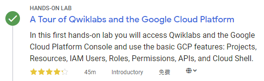</p><p><a href="https://cloud.google.com/" target="_blank" rel="noopener">Google Cloud Platform</a> (GCP) 是託管在 Google 基礎架構上的一套雲端服務，從計算和儲存，到資料分析、機器學習、網路、GCP 提供各種服務和 API，可以與任何雲端計算應用程式或專案整合 - 無論是個人還是企業。</p><p>在這個入門等級的 lab 中，可透過使用 <a href="https://cloud.google.com/cloud-console/" target="_blank" rel="noopener">GCP console</a> (瀏覽器內的 UI，可讓您存取和管理 Google Cloud 服務) 來練習使用 GCP，了解 GCP 的主要功能，必了解 Qwiklabs 的環境。</p><h2 id="你會學到什麼"><a class="header-anchor" href="#你會學到什麼"></a>你會學到什麼</h2><ul><li>了解如何使用特定憑證存取 GCP console</li><li>認識 GCP 專案</li><li>了解如何使用 GCP 的導航選單來識別 GCP 服務的類型</li><li>了解 primitive roles 並使用 Cloud IAM 服務檢查特定使用者的可用操作</li><li>了解 Cloud Shell 並使用 <code>gcloud</code> toolkit 來執行指令</li><li>了解 API library 並查看其主要功能</li></ul><blockquote><p>若想了解如何 <a href="./gcp-vm-nignx-web-server.html">在 GCP 上建立 VM 架設 NIGNX Web server</a> 可參考此篇。<br>若想了解如何 <a href="./gcp-vm-windows-server.html">在 GCP 上建立 VM 架設 Windows Server</a> 可參考此篇。</p></blockquote><blockquote><p>其他關於 Qwiklab 的介紹，可至原文 <a href="https://www.qwiklabs.com/focuses/2794?parent=catalog" target="_blank" rel="noopener">A Tour of Qwiklabs and the Google Cloud Platform</a> 查看。</p></blockquote><h2 id="存取-gcp-console"><a class="header-anchor" href="#存取-gcp-console"></a>存取 GCP Console</h2><p>如果已經點擊右上角的「Start Lab」開始，應該會看到左側的「Open Google Console」按鈕變成可以被點擊，而且可以看到有帳號、密碼以及 GCP 專案 ID：</p><p></p><h3 id="gcp-專案-id"><a class="header-anchor" href="#gcp-專案-id"></a>GCP 專案 ID</h3><p><a href="https://cloud.google.com/docs/overview/#projects" target="_blank" rel="noopener">GCP 專案</a>是你的 Google 雲端資源的組織實體，包含資源和服務，例如：可以包含一個 VM 的 pool，一組資料庫以及將它們彼此連接的網路，專案還包含設定和權限，這些設定和權限可以指定安全規則以及設定誰有權存取哪些資源。而 GCP Project ID 不會重複，用於將 GCP 資源和 API 連接到你的特定專案。</p><h3 id="帳號和密碼"><a class="header-anchor" href="#帳號和密碼"></a>帳號和密碼</h3><p>帳號和密碼是表示在 GCP 身份和存取管理 (Identity and Access Management，IAM) 服務中，具有存取權限身份 (一個或多個角色) 的憑證，允許你在已分配的專案中使用 GCP 資源。這些憑證是臨時的，只能在 lab 限制的存取時間內使用，所以只要計時器倒數到 0 之後，你就無法再使用這些憑證存取這個的 GCP 專案。</p><h2 id="登入-gcp"><a class="header-anchor" href="#登入-gcp"></a>登入 GCP</h2><ol><li>Lab 會提供給你免費暫時的 GCP 帳號，複製帳號和密碼，然後點擊「Open Google Console」開啟 <a href="https://cloud.google.com/storage/docs/cloud-console" target="_blank" rel="noopener">GCP Console</a>：</li></ol><p></p><ol start="2"><li>接著就會開啟登入頁面，建議另外開 Chrome 無痕模式來登入 lab 提供的帳號和密碼，因為 Chrome 會紀錄帳密，現在登入的只是暫時帳號，未來不需要用到：</li></ol><div class="warning"><p>注意：這邊是登入 lab 提供的帳號 (也就是 email 必須為 <code>googlexxxxxx_student@qwiklabs.net</code> )，如果你有自己的 GCP 帳號，請不要用於此 lab，避免產生費用</p><blockquote><p>類似於 <code>googlexxxxxx_student@qwiklabs.net</code> 的帳號是一個 Google 帳號，專為 Qwiklabs 學生使用而建立的。它具有特定的域名 (也就是 <code>qwiklabs.net</code> )，並且已分配了 IAM 角色，允許你去存取該 GCP 專案。</p></blockquote></div><p></p><ol start="3"><li>接受 terms 和 conditions：</li></ol><p></p><ol start="4"><li>不要新增 recovery options 或 two-factor authentication (因為這是一個臨時帳號)</li></ol><p></p><ol start="5"><li>勾選同意服務條款：</li></ol><p></p><p>之後就可以開始使用 GCP Console 囉：</p><p></p><h2 id="gcp-console-中的專案"><a class="header-anchor" href="#gcp-console-中的專案"></a>GCP Console 中的專案</h2><p>GCP Console 的左上角，會看到一個名為 Project info 的面板，畫面如下：</p><p>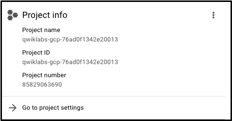</p><p>一個專案會有名稱、ID、編號，在使用 GCP 服務時會經常使用這些東西。不過你可以存取多個 GCP 專案。在某些 lab 中，可能會使用多個專案來完成分配的任務。如果點擊帶有專案名稱的下拉式選單並選擇「ALL」，就會看到「Qwiklabs Resources」專案也可見：</p><p></p><div class="info"><p>目前不要切換到 Qwiklabs 資源專案！但是，你可以稍後在其他 lab 中使用它。</p></div><p>GCP 的大型企業或有經驗的使用者擁有數十到數千個 GCP 專案的情況還蠻常見的，組織會以不同的方式使用 GCP，因此專案分離在雲端運算服務 (以團隊或產品為例) 是個好方法。</p><p>“Qwiklabs Resources” 是一個包含某些 lab 的檔案，資料集和機器 image 的專案，可以從每個 GCP lab 環境存取。要注意是 “Qwiklabs Resources” 與所有 Qwiklabs 使用者共享資源 (read only)，也就代表你無法刪除或修改它。</p><p>你正在使用名為類似於 <code>qwiklabs-gcp-xxx</code> 的 GCP 專案是臨時的，也就代表專案及其包含的所有內容會在 lab 結束後刪除。每次使用的 lab 都可以存取一個或多個新的 GCP 專案，並且在那裡 (不是 “Qwiklabs Resources” ) 執行所有 lab 的步驟。</p><h2 id="導航選單和服務"><a class="header-anchor" href="#導航選單和服務"></a>導航選單和服務</h2><p>在畫面的左上角有一個類似「三」的 icon：</p><p>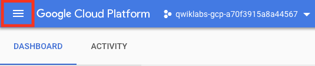</p><p>點擊此按鈕會顯示 (或隱藏) GCP 核心服務的導航選單，如果選單沒有打開，請點擊此 icon 並捲動查看所有提供的服務類型：</p><p>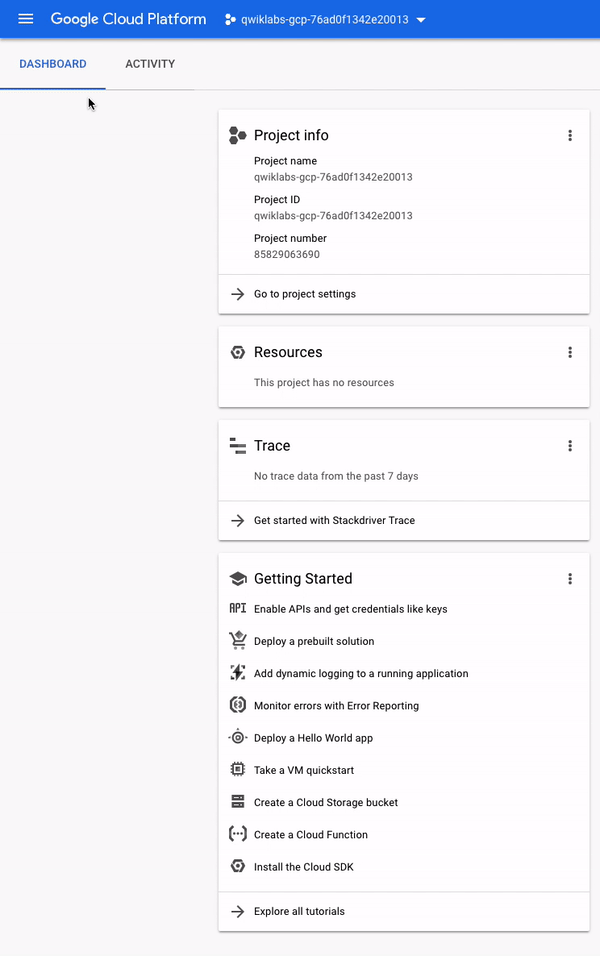</p><p>在導航選單可以快速存取平台的服務，可看到共有 7 類 GCP 的服務：</p><ul><li>Compute：包含支援任何類型的工作負載的各種機型。通過不同的運算選項，可以決定你希望如何參與 operational details 和基礎架構等</li><li>Storage：結構化或非結構化、關係資料或非關係資料的資料儲存和資料庫選項</li><li>Networking：平衡應用程式流量和提供安全規則的服務</li><li>Stackdriver：一套跨雲端日誌記錄 (cross-cloud logging)、監控、追蹤和其他服務的可靠性工具</li><li>Tools：管理部署和應用程式建置 pipeline 的開發人員的服務</li><li>Big Data：用於處理和分析大量資料集的服務</li><li>Artificial Intelligence (AI)：可在 GCP 上執行特定的 AI 和機器學習 (ML，machine learning) 任務的一套 API</li></ul><blockquote><p>詳情可查看官方的 <a href="https://cloud.google.com/docs/overview/cloud-platform-services" target="_blank" rel="noopener">About the GCP Services | Google Cloud</a> 文件。</p></blockquote><h2 id="角色和權限"><a class="header-anchor" href="#角色和權限"></a>角色和權限</h2><p>除了雲端運算服務之外，GCP 還包含一組權限和角色，用於定義誰可以存取哪些資源，我們就可以使用雲端身份和存取管理 (<a href="https://cloud.google.com/iam/" target="_blank" rel="noopener">Cloud Identity and Access Management，IAM</a>) 服務來檢查和修改角色和權限。</p><p>請打開導航選單，然後點擊「IAM &amp; admin」，畫面會跳至包含使用者列表的頁面，該頁面指定給予特定帳號的權限和角色。嘗試篩選這些並找到你登入的 “@qwiklabs” 此使用者名稱：</p><p>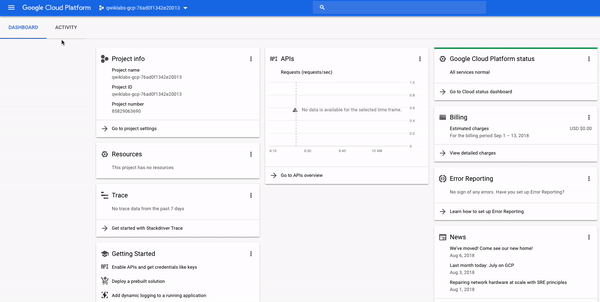</p><p>類似下圖：</p><p>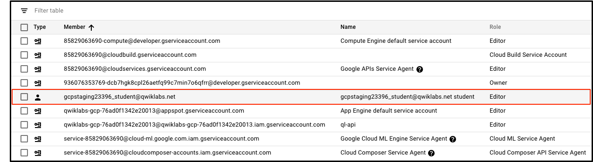</p><p>member 欄位被設為 <code>google23396_student@qwiklabs.net</code>（與你登入的帳號一樣），name 欄位被設為 <code>google23396_student@qwiklabs.net student</code>。會看到 Role 欄位被設為 <code>Editor</code>，這是 GCP 提供的三種 primitive roles 的其中之一。除非另有指定，否則 primitive roles 是設定專案等級的權限，它們控制對所有 GCP 服務的存取和管理。</p><p>下表是從<a href="https://cloud.google.com/iam/docs/understanding-roles#primitive_roles" target="_blank" rel="noopener">角色文件</a>中提取的定義，其中提供了 viewer、editor 和 owner 角色權限的 overview：</p><table><thead><tr><th>角色名稱</th><th>權限</th></tr></thead><tbody><tr><td>roles/viewer</td><td>不影響狀態的 read-only 操作的權限，例如：查看 (但不能修改) 現有的資源或資料</td></tr><tr><td>roles/editor</td><td>所有 viewer 的權限，以及修改狀態的操作的權限，例如：修改現有資源</td></tr><tr><td>roles/owner</td><td>所有 editor 權限和以下操作的權限：<br>- 管理專案的角色和權限以及專案中的所有資源<br>- 設定專案的計費方式</td></tr></tbody></table><p>因此 editor 能夠建立、修改和刪除 GCP 資源。但是無法在 GCP 專案中新增或刪除 member。</p><h2 id="api-和服務"><a class="header-anchor" href="#api-和服務"></a>API 和服務</h2><p>Google Cloud API 是 GCP 中重要的部分。與服務類似，從企業管理到機器學習等領域的 200 多個 API 都可以輕鬆地與 GCP 專案和應用程式整合。</p><p>API 是 “Application Programming Interfaces”，可以直接或通過 Google Cloud client library 呼叫 (call) 它們。 Cloud API 使用官方的 <a href="https://cloud.google.com/apis/design/" target="_blank" rel="noopener">Google API Design Guide</a> 中描述的資源導向的設計原則。</p><p>當 Qwiklabs 為 lab instance 提供新的 GCP 專案時，它可以在背後啟用大多數的 API，以便你可以立即處理 lab 的任務。但要注意的事，當你在 Qwiklabs 之外建立自己的 GCP 專案時，必須自己啟用某些 API。</p><p>大多數雲端 API 會為你提供有關專案使用該 API 的詳細資訊 (包括流量、錯誤率、延遲時間)，幫助你快速找到使用 Google服務的應用程序問題。你可以通過打開導航選單並點擊「APIs &amp; Services &gt; Library」來查看此資訊：</p><p>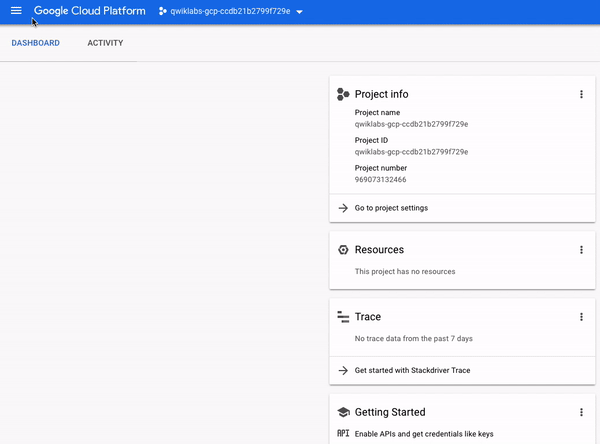</p><p>在 API 搜尋欄中，輸入 “Dialogflow” 並選擇 Dialogflow API 後，就會看到下圖的頁面：</p><p>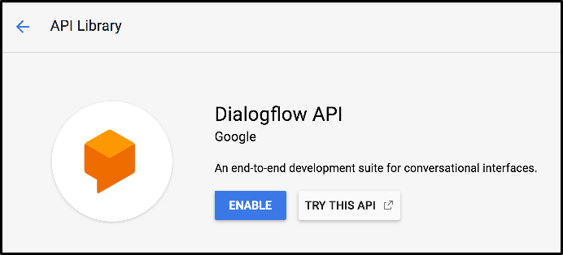</p><p>Dialogflow API 可讓你建置對話式 (conversational) 應用程式 (例如，for Google Assistant)，而無需擔心底層機器學習和自然語言理解 (Natural Language Understanding) schema。</p><p>點擊「ENABLE」按鈕後會跳至新頁面，接著點擊瀏覽器的返回按鈕就可看到「API enabled」：</p><p>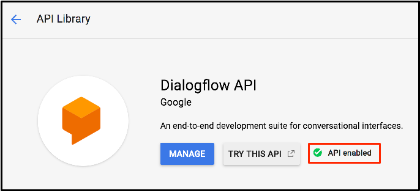</p><p>點擊「Try this API」按鈕會以新分頁的方式開啟 Dialogflow API 的文件，並且可以指定可用的 API 方法。</p><p>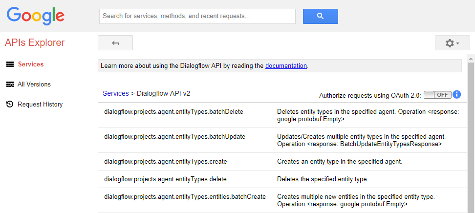</p><blockquote><p>詳情可查看 Google Cloud 中名為 <a href="https://developers.google.com/apis-explorer/#p/" target="_blank" rel="noopener">APIs Explorer</a> 的 hands-on 工具。</p></blockquote><h2 id="cloud-shell"><a class="header-anchor" href="#cloud-shell"></a>Cloud Shell</h2><p><a href="https://cloud.google.com/shell/docs/features" target="_blank" rel="noopener">Cloud Shell</a> 是在瀏覽器內的指令提示 (command prompt) 執行環境，允許你在終端提示 (terminal prompt) 下輸入指令來管理 GCP 專案中的資源和服務。Cloud Shell 能讓你在不離開 console 的情況下執行所有 shell 指令，並有預裝的 command-line 工具。</p><p>在 console 的右上角點擊「Activate Cloud Shell」按鈕，然後在出現提示時點擊「START CLOUD SHELL」按鈕：</p><p>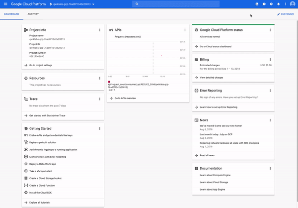</p><p>接著會在 console 底部出現一個新的黑色視窗，視窗內會出現類似以下內容的訊息和提示，這代表你已啟動並執行 Cloud Shell session：</p><figure class="highlight shell"><table><tr><td class="gutter"><pre><span class="line">1</span><br><span class="line">2</span><br><span class="line">3</span><br><span class="line">4</span><br></pre></td><td class="code"><pre><code class="hljs shell">Welcome to Cloud Shell! Type "help" to get started.<br>Your Cloud Platform project in this session is set to qwiklabs-gcp-76ad0f1342e20013.<br>Use "gcloud config set project [PROJECT_ID]" to change to a different project.<br>gcpstaging23396_student@cloudshell:~ (qwiklabs-gcp-76ad0f1342e20013)$<br></code></pre></td></tr></table></figure><p>接著將下面指令複製並貼 (或輸入) 至 Cloud Shell 上，然後按 Enter 鍵執行，應該會看到類似下面的輸出：</p><figure class="highlight shell"><table><tr><td class="gutter"><pre><span class="line">1</span><br><span class="line">2</span><br><span class="line">3</span><br><span class="line">4</span><br><span class="line">5</span><br><span class="line">6</span><br></pre></td><td class="code"><pre><code class="hljs shell"><span class="hljs-meta">$</span><span class="bash"> gcloud auth list</span><br>Credentialed Accounts<br>ACTIVE  ACCOUNT<br>*       gcpstaging23396_student@qwiklabs.net<br>To set the active account, run:<br>    $ gcloud config set account `ACCOUNT`<br></code></pre></td></tr></table></figure><p>其中 <code>ACTIVE ACCOUNT</code> 是設為你的 GCP IAM 身份 (也就是 <code>googlexxxxxx_student@qwiklabs.net</code> )，<a href="https://cloud.google.com/sdk/gcloud/reference/auth/list" target="_blank" rel="noopener"><code>gcloudauth list</code></a> 指令會列出 GCP 專案中有憑證的帳號。此帳號名稱與之前登入到 console 的 Qwiklabs 帳號相同。：</p><p>如之前所說的，Cloud Shell 預裝了特定的 command-line 工具，主要的 GCP toolkit 是 <a href="https://cloud.google.com/sdk/gcloud/" target="_blank" rel="noopener"><code>gcloud</code></a>，是用於平台上的許多任務，例如：資源管理和使用者身份驗證。除了預裝的 toolkit，Cloud Shell 還附帶標準的 unix CLI 工具和 <a href="https://www.nano-editor.org/" target="_blank" rel="noopener">nano</a> 等文字編輯器，在 Cloud Shell 中可以利用它們來建立和編輯檔案。</p><h2 id="參考來源"><a class="header-anchor" href="#參考來源"></a>參考來源</h2><ul><li><a href="https://www.qwiklabs.com/focuses/2794?parent=catalog" target="_blank" rel="noopener">A Tour of Qwiklabs and the Google Cloud Platform</a> (本篇大多數的圖片來源)</li></ul></div><div class="article-tags tags"><a href="/tags/gcp/" title="GCP">GCP</a></div></section><div class="article-share-links"><span>分享：</span> <a class="fab fa-facebook-f" title="Facebook" target="_blank" href="javascript:window.open('https://www.facebook.com/sharer.php?u=https%3A%2F%2Ftitangene.github.io%2Farticle%2Fgetting-started-with-gcp.html', 'Share on Facebook','width=600, height=600')"></a> <a class="fab fa-twitter" title="Twitter" target="_blank" href="javascript:window.open('https://twitter.com/share?url=https%3A%2F%2Ftitangene.github.io%2Farticle%2Fgetting-started-with-gcp.html&amp;text=GCP (Google Cloud Platform) 入門&amp;hashtags=GCP&amp;via=titangene_blog', 'Share on Twitter','width=600, height=260')"></a> <a class="fab fa-linkedin-in" title="Linkedin" target="_blank" href="javascript:window.open('https://www.linkedin.com/shareArticle?mini=true&amp;url=https%3A%2F%2Ftitangene.github.io%2Farticle%2Fgetting-started-with-gcp.html&amp;title=GCP (Google Cloud Platform) 入門', 'Share on Linkedin','width=600, height=600')"></a> <a class="fab fa-facebook-messenger" title="Facebook Messenger" target="_blank" href="javascript:window.open('http://www.facebook.com/dialog/send?app_id=2470546159839111&amp;link=https%3A%2F%2Ftitangene.github.io%2Farticle%2Fgetting-started-with-gcp.html&amp;display=popup&amp;redirect_uri=https%3A%2F%2Fwww.facebook.com%2Fdialog%2Freturn%2Fclose%23_%3D_', 'Send in Messenger','width=600, height=600')"></a> <a class="fab fa-telegram-plane" href="https://telegram.me/share/url?url=https%3A%2F%2Ftitangene.github.io%2Farticle%2Fgetting-started-with-gcp.html&text=GCP (Google Cloud Platform) 入門" target="_blank"></a></div><nav id="article-nav"><a href="/article/gcp-vm-windows-server.html" id="article-nav-prev" class="article-nav-link-wrap" title="在 GCP 上建立 VM 架設 Windows Server" rel="prev"><strong class="article-nav-caption">Prev</strong><p class="article-nav-title">在 GCP 上建立 VM 架設 Windows Server</p><i class="fas fa-angle-left"></i> </a><a href="/article/gcp-vm-nignx-web-server.html" id="article-nav-next" class="article-nav-link-wrap" title="在 GCP 上建立 VM 架設 NIGNX Web server" rel="next"><strong class="article-nav-caption">Next</strong><p class="article-nav-title">在 GCP 上建立 VM 架設 NIGNX Web server</p><i class="fas fa-angle-right"></i></a></nav><section id="list_related_posts"><h2>相關文章</h2><ul class="related-posts"><li class="related-posts-item"><div class="related-posts-content"><h4><a class="related-posts-link" href="/article/getting-started-with-google-k8s-engine.html">Google Kubernetes Engine (GKE) 入門</a></h4><div class="related-posts-item-abstract"><p>本篇是紀錄在 Google 的 Qwiklab 平台內，完成「<a href="https://www.qwiklabs.com/focuses/878?parent=catalog" target="_blank" rel="noopener">Kubernetes Engine: Qwik Start</a>」這個 quest 所學到的內容，包括如何透過 GKE 建立容器和部署容器化應用程式。</p></div></div></li><li class="related-posts-item"><div class="related-posts-content"><h4><a class="related-posts-link" href="/article/getting-started-with-cloud-shell-gcloud-and-gsutil.html">Google Cloud Shell 入門：gcloud & gsutil</a></h4><div class="related-posts-item-abstract"><p>本篇是紀錄在 Google 的 Qwiklab 平台內，完成「<a href="https://www.qwiklabs.com/focuses/563?parent=catalog" target="_blank" rel="noopener">Getting Started with Cloud Shell &amp; gcloud</a>」這個 quest 所學到的內容，包括如何使用 <code>gcloud</code> 指令，以及如何使用 <code>gsutil</code> 工具來管理 Cloud Storage 資源，將檔案上傳至指定的 bucket。</p></div></div></li><li class="related-posts-item"><div class="related-posts-content"><h4><a class="related-posts-link" href="/article/gcp-vm-nignx-web-server.html">在 GCP 上建立 VM 架設 NIGNX Web server</a></h4><div class="related-posts-item-abstract"><p>本篇是紀錄在 Google 的 Qwiklab 平台內，完成「<a href="https://www.qwiklabs.com/focuses/3563?parent=catalog" target="_blank" rel="noopener">Creating a Virtual Machine</a>」這個 quest 所學到的內容，包括如何透過 GCP Console 和 command-line 工具 <code>gcloud</code> 在 GCP 建立 instance，如何使用 <code>gcloud</code> 透過 SSH 連接到你的 instance，以及如何在 VM 上部署 NIGNX web server。</p></div></div></li><li class="related-posts-item"><div class="related-posts-content"><h4><a class="related-posts-link" href="/article/gcp-network-and-http-load-balancer.html">在 GCP 建立 Network Load Balancer 和 HTTP Load Balancer</a></h4><div class="related-posts-item-abstract"><p>本篇是紀錄在 Google 的 Qwiklab 平台內，完成「<a href="https://www.qwiklabs.com/focuses/558?parent=catalog" target="_blank" rel="noopener">Set Up Network and HTTP Load Balancers</a>」這個 quest 所學到的內容，包括如何建立多個 web server instance，以及如何建立 network load balancer 和 HTTP load balancer。</p></div></div></li><li class="related-posts-item"><div class="related-posts-content"><h4><a class="related-posts-link" href="/article/gcp-vm-windows-server.html">在 GCP 上建立 VM 架設 Windows Server</a></h4><div class="related-posts-item-abstract"><p>本篇是紀錄在 Google 的 Qwiklab 平台內，完成「<a href="https://www.qwiklabs.com/focuses/560?parent=catalog" target="_blank" rel="noopener">Compute Engine: Qwik Start - Windows</a>」這個 quest 所學到的內容，包括如何透過 GCP Console 在 GCP 建立 instance 架設 Windows Server，以及如何使用 <a href="https://chrome.google.com/webstore/detail/chrome-rdp-for-google-clo/mpbbnannobiobpnfblimoapbephgifkm" target="_blank" rel="noopener">Chrome RDP for GCP</a> 擴充功能直接從瀏覽器進行 RDP 連接至 Windows Server。</p></div></div></li></ul></section><section class="comments" id="comments"><h2>討論區</h2><div id="disqus_thread"><noscript>Please enable JavaScript to view the <a href="https://disqus.com/?ref_noscript">comments powered by Disqus.</a></noscript></div></section></article><script>window.subData={title:"GCP (Google Cloud Platform) 入門",tools:!0}</script></div><aside class="l_side"><section class="m_widget about"><div class="avatar-section"><style>.avatar-cover{background:url(/images/avatar_cover.jpg) 0 10%/cover no-repeat}</style><div class="avatar-cover"></div></div><div class="header">Titangene</div><div class="content"><div class="desc">利用 blog 紀錄學習歷程</div></div><div class="content"><meta itemprop="url" content="https://titangene.github.io"><div class="social-wrapper"><a itemprop="sameAs" href="https://github.com/titangene" class="social github" target="_blank" rel="external"><span class="fab fa-github-alt"></span> </a><a itemprop="sameAs" href="https://www.facebook.com/titangene.tw" class="social facebook" target="_blank" rel="external"><span class="fab fa-facebook-square"></span> </a><a itemprop="sameAs" href="https://www.instagram.com/titangene/" class="social instagram" target="_blank" rel="external"><span class="fab fa-instagram"></span> </a><a itemprop="sameAs" href="https://www.flickr.com/photos/titangene" class="social flickr" target="_blank" rel="external"><span class="fab fa-flickr"></span> </a><a itemprop="sameAs" href="/atom.xml" class="social rss" target="_blank" rel="external"><span class="fas fa-rss"></span></a></div></div></section><section class="m_widget facebook_page"><div class="fb-page" data-href="https://www.facebook.com/titangene.blog/" data-width="250" data-small-header="false" data-adapt-container-width="false" data-hide-cover="false" data-show-facepile="true"><blockquote cite="https://www.facebook.com/titangene.blog/" class="fb-xfbml-parse-ignore"><p><a href="https://www.facebook.com/titangene.blog/" class="social facebook" target="_blank"><span class="fab fa-facebook-square"></span></a></p><p><a href="https://www.facebook.com/titangene.blog/">Titangene Blog</a></p><p>Loading...</p></blockquote></div></section><section class="m_widget recent"><div class="header">Recents</div><div class="content"><ul class="entry"><li><a itemprop="url" class="flat-box" href="/article/hackmd-dark-theme.html"><time>2019-05-18</time><div class="name">套用自訂 HackMD 暗主題</div></a></li><li><a itemprop="url" class="flat-box" href="/article/networking-in-docker-compose.html"><time>2019-05-15</time><div class="name">透過 Docker Compose 設定 network</div></a></li><li><a itemprop="url" class="flat-box" href="/article/gcp-network-and-http-load-balancer.html"><time>2019-04-24</time><div class="name">在 GCP 建立 Network Load Balancer 和 HTTP Load Balancer</div></a></li><li><a itemprop="url" class="flat-box" href="/article/getting-started-with-google-k8s-engine.html"><time>2019-04-19</time><div class="name">Google Kubernetes Engine (GKE) 入門</div></a></li><li><a itemprop="url" class="flat-box" href="/article/getting-started-with-cloud-shell-gcloud-and-gsutil.html"><time>2019-04-17</time><div class="name">Google Cloud Shell 入門：gcloud &amp; gsutil</div></a></li></ul></div></section></aside><script>setLoadingBarProgress(60)</script></div></div><footer id="footer" class="clearfix"><div class="social-wrapper"><a href="https://github.com/titangene" class="social github" target="_blank" rel="external"><span class="fab fa-github-alt"></span> </a><a href="https://www.facebook.com/titangene.tw" class="social facebook" target="_blank" rel="external"><span class="fab fa-facebook-square"></span> </a><a href="https://www.instagram.com/titangene/" class="social instagram" target="_blank" rel="external"><span class="fab fa-instagram"></span> </a><a href="https://www.flickr.com/photos/titangene" class="social flickr" target="_blank" rel="external"><span class="fab fa-flickr"></span> </a><a href="/atom.xml" class="social rss" target="_blank" rel="external"><span class="fas fa-rss"></span></a></div><div>© 2018 - 2019 <span itemprop="copyrightHolder">Titangene</span></div><div>Powered by <a href="https://hexo.io/" class="codename" rel="external">Hexo</a> - Theme <a href="https://github.com/stkevintan/hexo-theme-material-flow" class="codename" rel="external">MaterialFlow</a></div><div><a rel="license" href="http://creativecommons.org/licenses/by-nc-sa/4.0/"></a></div></footer><script>setLoadingBarProgress(80)</script><script src="//cdnjs.cloudflare.com/ajax/libs/jquery/2.1.4/jquery.min.js"></script><script src="https://cdnjs.cloudflare.com/ajax/libs/moment.js/2.24.0/moment-with-locales.min.js"></script><script>moment.locale("zh-tw")</script><script src="//cdnjs.cloudflare.com/ajax/libs/scrollReveal.js/3.3.2/scrollreveal.min.js"></script><script src="https://cdnjs.cloudflare.com/ajax/libs/clipboard.js/2.0.0/clipboard.min.js"></script><script src="/js/jquery.fitvids.js"></script><script>var SEARCH_SERVICE="hexo",ROOT="/";ROOT.endsWith("/")||(ROOT+="/")</script><script src="/js/search.js"></script><script src="/js/app.js"></script><script src="/js/clipboard-use.js"></script><script>var disqus_shortname="titangene-blog",disqus_config=function(){this.page.url="https://titangene.github.io/article/getting-started-with-gcp.html",this.page.identifier="article/getting-started-with-gcp.html",this.page.title="GCP (Google Cloud Platform) 入門"};!function(){var t=document.createElement("script");t.async=!0,t.src="//"+disqus_shortname+".disqus.com/embed.js",t.setAttribute("data-timestamp",""+new Date),(document.head||document.body).appendChild(t)}()</script><script id="dsq-count-scr" src="https://titangene-blog.disqus.com/count.js" async></script><div id="fb-root"></div><script>window.fbAsyncInit=function(){FB.init({appId:"2470546159839111",autoLogAppEvents:!0,xfbml:!0,version:"v2.11"}),FB.AppEvents.logPageView()},function(e,n,t){var o,s=e.getElementsByTagName(n)[0];e.getElementById(t)||((o=e.createElement(n)).id=t,o.src="//connect.facebook.net/zh_TW/sdk.js",s.parentNode.insertBefore(o,s))}(document,"script","facebook-jssdk")</script><script>setLoadingBarProgress(100)</script></body>